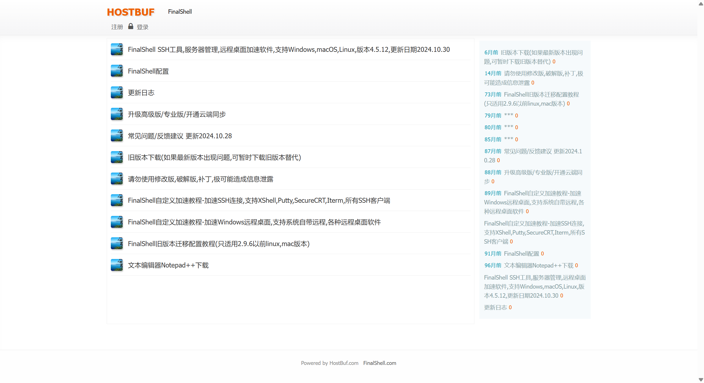

FinalShell溯源小记

FinalShell溯源小记
4月3日看到了火绒安全发布的文章《伪FinalShell官网“钓鱼”，后门病毒窃密企业SSH凭证》，针对附录的C2服务器，于清明假期尝试复现
首先这个是FinalShell的钓鱼页面（https://finalshell.cn/）（页面真的很粗糙，图片都超出了页面范围）


这个是官方页面（https://www.hostbuf.com/）

下载macOS和Linux版本，结果压缩包出来都是.exe（幽默exe）

针对网站进行whois查询，得到相关信息
CNNIC（China Internet Network Information Center）中国互联网络信息中心

（朋友告诉我CNNIC不免费提供whois保护，所以.cn的域名便宜）
| 信息项 | 详细信息 |
|---|---|
| 注册人 | 刘璐 |
| 邮箱 | a8ddos@gmail.com |
| DNS查询 | 38.55.144.167 |
此外，在微步的报告里可以看到以下IOC
38.46.10.130 |
对这个IP进行扫描端口发现只有一个54端口开放
处置建议
封禁双向出口
以下参考自微步
删除文件：
- C:\Users\Administrator\Desktop\Final shell.lnk
- C:\Users\Administrator\AppData\Roaming\a2534\LVPWyh\is-5JFKI.tmp
- C:\Users\Administrator\AppData\Roaming\a2534\LVPWyh\is-A54UQ.tmp
- C:\Users\Administrator\AppData\Roaming\a2534\LVPWyh\is-F6HFH.tmp
- C:\Users\Administrator\AppData\Local\Temp\is-1NSMJ.tmp\Fianl_shell.tmp
- C:\Users\Administrator\AppData\Roaming\a2534\bKrnW\YukXMio\is-155UO.tmp
- C:\Users\Administrator\AppData\Roaming\a2534\LVPWyh\is-E5Q5A.tmp
- C:\Users\Administrator\AppData\Roaming\a2534\LVPWyh\is-77NMA.tmp
- C:\Users\Administrator\AppData\Local\Temp\is-5PLC8.tmp_isetup_setup64.tmp
- C:\Users\Administrator\AppData\Roaming\a2534\LVPWyh\is-5JFKI.tmp
- C:\Users\Administrator\AppData\Roaming\a2534\LVPWyh\is-A54UQ.tmp
- C:\Users\Administrator\AppData\Roaming\a2534\LVPWyh\is-F6HFH.tmp
- C:\Users\Administrator\AppData\Local\Temp\is-1NSMJ.tmp\Fianl_shell.tmp
- C:\Users\Administrator\AppData\Roaming\a2534\bKrnW\YukXMio\is-155UO.tmp
- C:\Users\Administrator\AppData\Roaming\a2534\LVPWyh\is-E5Q5A.tmp
- C:\Users\Administrator\AppData\Roaming\a2534\LVPWyh\is-77NMA.tmp
- C:\Users\Administrator\AppData\Local\Temp\is-5PLC8.tmp_isetup_setup64.tmp
参考链接
伪FinalShell官网“钓鱼”，后门病毒窃密企业SSH凭证（有详细的逆向分析）
评论
评论插件加载失败
正在加载评论插件